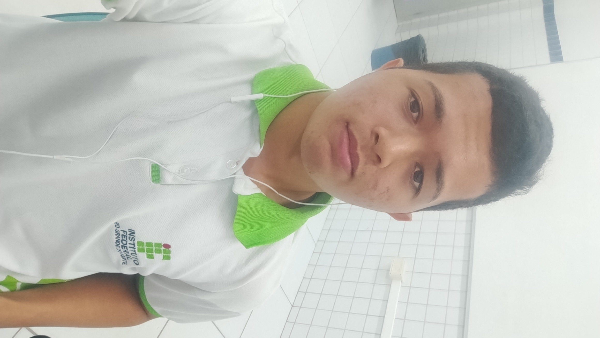

Um espaço para compartilhar um pouco sobre mim, minhas experiências e sonhos.
 Saiba mais
Saiba mais
Olá! Meu nome é Luiz Fernando e moro em Ielmo Marinho, no Rio Grande do Norte. Sou apaixonado por tecnologia, jogos e esportes. Estudo informática no IFRN, no momento não decidi se seguirei na carreira de programação. Nos meus tempos livres, gosto de treinar, explorar novos conhecimentos, estudar economia e passar tempo em games.
Foi no primeiro ano no IFRN de CM, numa aula de informática. A professora pediu pra gente passar os componentes de mão em mão, pra todo mundo da turma ver. Tranquilo, né? Cada um olhava a peça e passava pro colega do lado. Quando chegou em mim eu, todo certinho, peguei o componente… e em vez de passar pro colega ao lado, mandei direto pra outra fila! Como se aquela fila ja tivesse visto. A galera começou a rir, e o Luiz Henrique logo mandou: Esse homi não viu a fila do lado, kkkkk. Beleza. Rimos, seguimos. Mas o destino gosta de brincar. Quando chegou a vez do Luiz Henrique… adivinha? Ele fez a mesma coisa! Passou pra fila errada também! A turma explodiu de rir de novo. Só que dessa vez, o Guilherme que na época ainda estudava com a gente — olhou com aquela cara de indignado e mandou: Luiz, a gente não existe, é? E o Luiz Henrique, com cara de quem entendeu só depois: Homi… é mesmo, a minha fila…
Projeto de programação

Rotina de treino

Meu jogo favorito

Estudos sobre finanças
| Dia | Manhã | Tarde | Noite |
|---|---|---|---|
| Segunda | Academia, Estudo e Reuniao | Aula | Descanso |
| Terça | Academia, Estudo e Reuniao | Aula | Jogar |
| Quarta | Aula,Academia e Estudo | Aula | Descanso |
| Quinta | Estudo e Aula | Aula | Descanso |
| Sexta | Academia e Estudo | Aula | Filme ou Desenho |
| Sábado | Descanso | Família e Trabalhos | Jogos |
| Domingo | Descanso | estudo | Lazer |